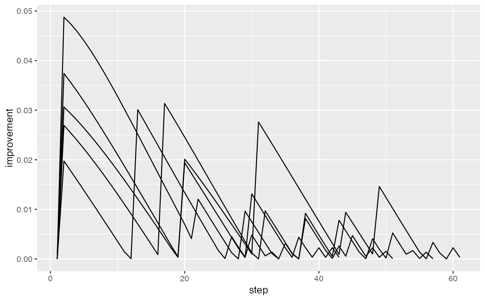

This is a convenience method that returns a data frame summarising the index values for multiple tour paths.
paths_index(bases_list, index_f)
| bases_list | list of histories produced by |
|---|---|
| index_f | index function to apply to each projection |
holes1d <- guided_tour(holes(), 1) # Perform guided tour 5 times, saving results tries <- replicate(5, save_history(flea[, 1:6], holes1d), simplify = FALSE)#>#> Value 0.986 240.1 % better - NEW BASIS #> Value 0.654 125.6 % better - NEW BASIS #> Value 0.977 49.4 % better - NEW BASIS #> Value 1.276 30.7 % better - NEW BASIS #> Value 1.319 3.3 % better - NEW BASIS #> Value 1.334 1.2 % better - NEW BASIS #> Value 1.364 2.3 % better - NEW BASIS #> Value 1.368 0.2 % better - NEW BASIS #> Value 1.368 0.0 % better #> Value 1.369 0.1 % better #> Value 1.368 0.0 % better #> Value 1.368 0.0 % better #> Value 1.369 0.1 % better - NEW BASIS #> Value 1.369 0.0 % better #> Value 1.369 0.0 % better #> Value 1.369 0.0 % better #> Value 1.369 0.0 % better #> Value 1.369 0.0 % better #> Value 1.369 0.0 % better #> Value 1.369 0.0 % better #> Value 1.369 0.0 % better #> Value 1.369 0.0 % better #> Value 1.369 0.0 % better #> Value 1.369 0.0 % better #> Value 1.369 0.0 % better #> Value 1.369 0.0 % better #> Value 1.369 0.0 % better #> Value 1.370 0.0 % better #> Value 1.369 0.0 % better #> Value 1.369 0.0 % better #> Value 1.369 0.0 % better #> Value 1.369 0.0 % better #> Value 1.369 0.0 % better #> Value 1.369 0.0 % better #> Value 1.369 0.0 % better #> Value 1.369 0.0 % better #> Value 1.369 0.0 % better #> No better bases found after 25 tries. Giving up. #> Final projection: #> 0.367 0.334 0.402 0.360 0.486 0.475#>#> Value 1.144 96.5 % better - NEW BASIS #> Value 0.752 29.1 % better - NEW BASIS #> Value 1.093 45.5 % better - NEW BASIS #> Value 1.219 11.5 % better - NEW BASIS #> Value 1.268 4.0 % better - NEW BASIS #> Value 1.313 3.6 % better - NEW BASIS #> Value 1.346 2.5 % better - NEW BASIS #> Value 1.359 1.0 % better - NEW BASIS #> Value 1.366 0.5 % better - NEW BASIS #> Value 1.368 0.2 % better - NEW BASIS #> Value 1.369 0.1 % better #> Value 1.368 0.0 % better #> Value 1.369 0.1 % better #> Value 1.368 0.0 % better #> Value 1.369 0.1 % better #> Value 1.368 0.0 % better #> Value 1.369 0.1 % better #> Value 1.368 0.0 % better #> Value 1.368 0.0 % better #> Value 1.368 0.0 % better #> Value 1.368 0.0 % better #> Value 1.369 0.1 % better #> Value 1.369 0.1 % better #> Value 1.369 0.0 % better #> Value 1.369 0.1 % better - NEW BASIS #> Value 1.369 0.0 % better #> Value 1.369 0.0 % better #> Value 1.370 0.0 % better #> Value 1.369 0.0 % better #> Value 1.370 0.0 % better #> Value 1.369 0.0 % better #> Value 1.369 0.0 % better #> Value 1.369 0.0 % better #> Value 1.369 0.0 % better #> Value 1.369 0.0 % better #> Value 1.369 0.0 % better #> Value 1.369 0.0 % better #> Value 1.369 0.0 % better #> Value 1.369 0.0 % better #> Value 1.370 0.0 % better #> Value 1.369 0.0 % better #> Value 1.369 0.0 % better #> Value 1.370 0.0 % better #> Value 1.369 0.0 % better #> Value 1.369 0.0 % better #> Value 1.369 0.0 % better #> Value 1.369 0.0 % better #> Value 1.370 0.0 % better #> Value 1.370 0.0 % better #> No better bases found after 25 tries. Giving up. #> Final projection: #> -0.374 -0.342 -0.388 -0.344 -0.503 -0.470#>#> Value 0.706 1155.8 % better - NEW BASIS #> Value 0.508 803.1 % better - NEW BASIS #> Value 0.830 63.5 % better - NEW BASIS #> Value 1.138 37.0 % better - NEW BASIS #> Value 1.219 7.1 % better - NEW BASIS #> Value 1.328 9.0 % better - NEW BASIS #> Value 1.349 1.6 % better - NEW BASIS #> Value 1.352 0.2 % better - NEW BASIS #> Value 1.363 0.8 % better - NEW BASIS #> Value 1.365 0.2 % better - NEW BASIS #> Value 1.367 0.2 % better - NEW BASIS #> Value 1.368 0.1 % better #> Value 1.369 0.1 % better - NEW BASIS #> Value 1.369 0.0 % better #> Value 1.369 0.0 % better #> Value 1.369 0.0 % better #> Value 1.369 0.0 % better #> Value 1.369 0.0 % better #> Value 1.369 0.0 % better #> Value 1.369 0.0 % better #> Value 1.369 0.0 % better #> Value 1.369 0.0 % better #> Value 1.369 0.0 % better #> Value 1.369 0.0 % better #> Value 1.369 0.0 % better #> Value 1.369 0.0 % better #> Value 1.369 0.0 % better #> Value 1.369 0.0 % better #> Value 1.369 0.0 % better #> Value 1.369 0.0 % better #> Value 1.369 0.0 % better #> Value 1.369 0.0 % better #> Value 1.369 0.0 % better #> Value 1.369 0.0 % better #> Value 1.369 0.0 % better #> Value 1.369 0.0 % better #> Value 1.369 0.0 % better #> No better bases found after 25 tries. Giving up. #> Final projection: #> -0.359 -0.324 -0.380 -0.367 -0.508 -0.480#>#> Value 0.684 112.6 % better - NEW BASIS #> Value 0.911 183.3 % better - NEW BASIS #> Value 1.073 17.8 % better - NEW BASIS #> Value 1.262 17.6 % better - NEW BASIS #> Value 1.342 6.3 % better - NEW BASIS #> Value 1.363 1.6 % better - NEW BASIS #> Value 1.367 0.3 % better - NEW BASIS #> Value 1.368 0.1 % better #> Value 1.368 0.1 % better #> Value 1.369 0.1 % better - NEW BASIS #> Value 1.369 0.0 % better #> Value 1.369 0.0 % better #> Value 1.369 0.0 % better #> Value 1.369 0.0 % better #> Value 1.369 0.0 % better #> Value 1.369 0.0 % better #> Value 1.369 0.0 % better #> Value 1.369 0.0 % better #> Value 1.369 0.0 % better #> Value 1.369 0.0 % better #> Value 1.369 0.0 % better #> Value 1.369 0.0 % better #> Value 1.369 0.0 % better #> Value 1.369 0.0 % better #> Value 1.369 0.0 % better #> Value 1.369 0.0 % better #> Value 1.369 0.0 % better #> Value 1.369 0.0 % better #> Value 1.369 0.0 % better #> Value 1.369 0.0 % better #> Value 1.369 0.0 % better #> Value 1.369 0.0 % better #> Value 1.369 0.0 % better #> Value 1.369 0.0 % better #> No better bases found after 25 tries. Giving up. #> Final projection: #> -0.367 -0.336 -0.405 -0.356 -0.506 -0.454#>#> Value 0.375 194.0 % better - NEW BASIS #> Value 0.784 514.7 % better - NEW BASIS #> Value 0.833 6.2 % better - NEW BASIS #> Value 1.072 28.8 % better - NEW BASIS #> Value 1.250 16.5 % better - NEW BASIS #> Value 1.309 4.8 % better - NEW BASIS #> Value 1.319 0.8 % better - NEW BASIS #> Value 1.356 2.8 % better - NEW BASIS #> Value 1.361 0.4 % better - NEW BASIS #> Value 1.365 0.3 % better - NEW BASIS #> Value 1.367 0.1 % better - NEW BASIS #> Value 1.367 0.0 % better #> Value 1.368 0.1 % better - NEW BASIS #> Value 1.369 0.0 % better #> Value 1.369 0.0 % better #> Value 1.369 0.0 % better #> Value 1.369 0.1 % better #> Value 1.369 0.0 % better #> Value 1.369 0.1 % better #> Value 1.369 0.1 % better #> Value 1.369 0.0 % better #> Value 1.369 0.0 % better #> Value 1.369 0.1 % better #> Value 1.369 0.0 % better #> Value 1.369 0.0 % better #> Value 1.369 0.1 % better #> Value 1.369 0.1 % better #> Value 1.369 0.0 % better #> Value 1.369 0.0 % better #> Value 1.369 0.1 % better #> Value 1.369 0.0 % better #> Value 1.369 0.1 % better #> Value 1.369 0.1 % better #> Value 1.369 0.0 % better #> Value 1.369 0.0 % better #> Value 1.369 0.0 % better #> Value 1.369 0.0 % better #> No better bases found after 25 tries. Giving up. #> Final projection: #> 0.380 0.336 0.398 0.348 0.515 0.446# Interpolate between target bases itries <- lapply(tries, interpolate) paths <- paths_index(itries, holes()) head(paths)#> try step value improvement #> 1 1 1 0.6539637 0.00000000 #> 2 1 2 0.6849236 0.03095990 #> 3 1 3 0.7148140 0.02989034 #> 4 1 4 0.7435132 0.02869920 #> 5 1 5 0.7709109 0.02739771 #> 6 1 6 0.7969072 0.02599638if (require(ggplot2)) { qplot(step, value, data=paths, group=try, geom="line") qplot(step, improvement, data=paths, group=try, geom="line") }